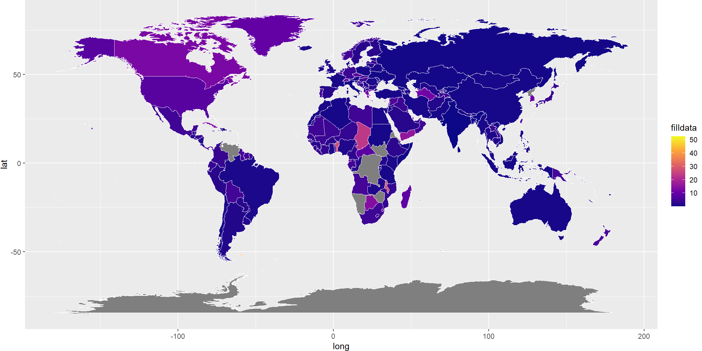
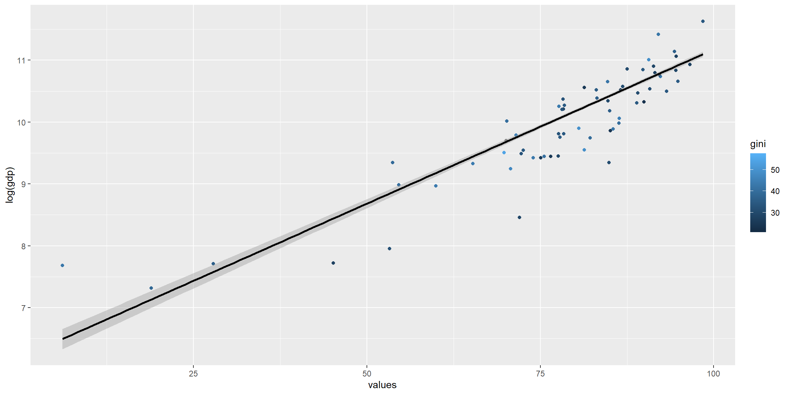
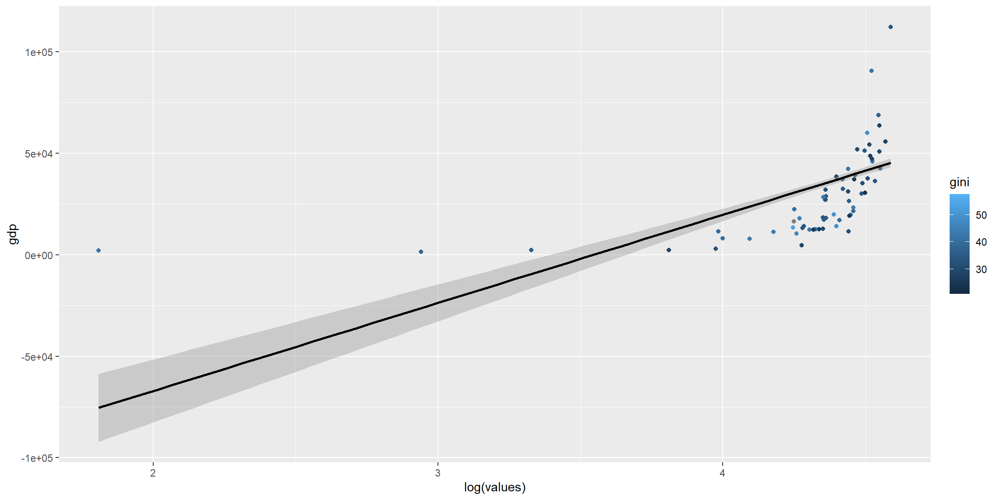

id country region c2 year.x gini ge0 ge1 ge2 a025 a050 a075
1 21 Albania ALB AL 2020 33.20 NA NA NA NA NA NA
2 237 Argentina ARG AR 2020 40.00 NA 28.30 NA NA 12.90 NA
3 238 Argentina ARG AR 2020 42.34 NA NA NA NA NA NA
4 292 Armenia ARM AM 2020 25.17 NA NA NA NA NA NA
5 1015 Austria AUT AT 2020 30.40 17.70 16.25 21.10 3.99 7.91 11.91
6 1016 Austria AUT AT 2020 27.09 14.59 13.04 15.85 3.23 6.45 9.82
a1 a2 palma ratio_top20bottom20 bottom40 q1 q2 q3 q4 q5
1 NA NA 1.26 5.84 19.30 6.90 12.40 17.00 23.40 40.30
2 24.00 NA 1.83 7.90 16.60 5.90 10.70 14.90 21.70 46.60
3 NA NA 2.11 9.82 14.34 4.82 9.52 15.10 23.23 47.34
4 NA NA 0.88 3.48 24.51 10.21 14.30 17.76 22.17 35.56
5 16.22 48.45 1.11 4.89 21.07 7.84 13.22 17.47 23.10 38.36
6 13.58 45.73 0.94 4.12 23.11 8.76 14.35 18.09 22.69 36.12
d1 d2 d3 d4 d5 d6 d7 d8 d9 d10 bottom5 top5
1 2.50 4.30 5.60 6.80 7.90 9.10 10.70 12.70 15.90 24.40 1.00 14.30
2 1.90 4.00 4.90 5.80 6.80 8.10 9.80 11.90 16.20 30.40 NA NA
3 1.75 3.07 4.18 5.34 6.74 8.36 10.35 12.87 17.04 30.30 NA NA
4 4.37 5.85 6.75 7.55 8.43 9.33 10.38 11.79 14.08 21.47 NA NA
5 2.82 5.02 6.14 7.08 8.17 9.31 10.73 12.37 14.98 23.37 1.01 14.10
6 3.28 5.48 6.66 7.69 8.60 9.49 10.60 12.09 14.34 21.77 1.16 13.08
resource resource_detailed scale scale_detailed sharing_unit
1 Income (net) Income, net Equivalized OECD-modified Household
2 Income (net/gross) Income, net/gross Per capita Per capita Household
3 Income (net/gross) Income, net/gross Per capita Per capita Household
4 Consumption Consumption Per capita Per capita Household
5 Income (net) Income, net Per capita Per capita Household
6 Income (net) Income, net Equivalized OECD-modified Household
reference_unit areacovr areacovr_detailed popcovr popcovr_detailed region_un
1 Person All All All All Europe
2 Person Urban Urban All All Americas
3 Person Urban Urban All All Americas
4 Person All All All All Asia
5 Person All All All All Europe
6 Person All All All All Europe
region_un_sub region_wb eu oecd
1 Southern Europe Europe and Central Asia Non-EU Non-OECD
2 South America Latin America and the Caribbean Non-EU Non-OECD
3 South America Latin America and the Caribbean Non-EU Non-OECD
4 Western Asia Europe and Central Asia Non-EU Non-OECD
5 Western Europe Europe and Central Asia EU OECD
6 Western Europe Europe and Central Asia EU OECD
incomegroup mean median currency reference_period exchangerate
1 Upper middle income 2943 2523 Euro Year NA
2 Upper middle income NA NA NA
3 Upper middle income 5891 4444 US$2011PPP Year NA
4 Upper middle income 2387 2117 US$2011PPP Year NA
5 High income 24245 20998 US$2017PPP Year NA
6 High income 34395 30993 US$2017PPP Year NA
mean_usd median_usd gdp population revision quality Country.Name Xyear
1 NA NA 13192 2877800 New 2022 High Albania X2020
2 NA NA 19691 45195776 New 2022 High Argentina X2020
3 NA NA 19691 45195776 New 2022 Average Argentina X2020
4 NA NA 12620 2963234 New 2022 Average Armenia X2020
5 NA NA 51856 9006400 New 2022 High Austria X2020
6 NA NA 51856 9006400 New 2022 High Austria X2020
percentaccess Country year.y GDP.per.capita
1 72.23768 Albania 2020 13256.12
2 85.51439 Argentina 2020 19685.22
3 85.51439 Argentina 2020 19685.22
4 76.50770 Armenia 2020 13357.70
5 87.52943 Austria 2020 51988.41
6 87.52943 Austria 2020 51988.41
id country c3 region year.x gini ge0 ge1 ge2 a025 a050 a075
1 21 Albania ALB AL 2020 33.20 NA NA NA NA NA NA
2 237 Argentina ARG AR 2020 40.00 NA 28.30 NA NA 12.90 NA
3 238 Argentina ARG AR 2020 42.34 NA NA NA NA NA NA
4 292 Armenia ARM AM 2020 25.17 NA NA NA NA NA NA
5 1015 Austria AUT AT 2020 30.40 17.70 16.25 21.10 3.99 7.91 11.91
6 1016 Austria AUT AT 2020 27.09 14.59 13.04 15.85 3.23 6.45 9.82
a1 a2 palma ratio_top20bottom20 bottom40 q1 q2 q3 q4 q5
1 NA NA 1.26 5.84 19.30 6.90 12.40 17.00 23.40 40.30
2 24.00 NA 1.83 7.90 16.60 5.90 10.70 14.90 21.70 46.60
3 NA NA 2.11 9.82 14.34 4.82 9.52 15.10 23.23 47.34
4 NA NA 0.88 3.48 24.51 10.21 14.30 17.76 22.17 35.56
5 16.22 48.45 1.11 4.89 21.07 7.84 13.22 17.47 23.10 38.36
6 13.58 45.73 0.94 4.12 23.11 8.76 14.35 18.09 22.69 36.12
d1 d2 d3 d4 d5 d6 d7 d8 d9 d10 bottom5 top5
1 2.50 4.30 5.60 6.80 7.90 9.10 10.70 12.70 15.90 24.40 1.00 14.30
2 1.90 4.00 4.90 5.80 6.80 8.10 9.80 11.90 16.20 30.40 NA NA
3 1.75 3.07 4.18 5.34 6.74 8.36 10.35 12.87 17.04 30.30 NA NA
4 4.37 5.85 6.75 7.55 8.43 9.33 10.38 11.79 14.08 21.47 NA NA
5 2.82 5.02 6.14 7.08 8.17 9.31 10.73 12.37 14.98 23.37 1.01 14.10
6 3.28 5.48 6.66 7.69 8.60 9.49 10.60 12.09 14.34 21.77 1.16 13.08
resource resource_detailed scale scale_detailed sharing_unit
1 Income (net) Income, net Equivalized OECD-modified Household
2 Income (net/gross) Income, net/gross Per capita Per capita Household
3 Income (net/gross) Income, net/gross Per capita Per capita Household
4 Consumption Consumption Per capita Per capita Household
5 Income (net) Income, net Per capita Per capita Household
6 Income (net) Income, net Equivalized OECD-modified Household
reference_unit areacovr areacovr_detailed popcovr popcovr_detailed region_un
1 Person All All All All Europe
2 Person Urban Urban All All Americas
3 Person Urban Urban All All Americas
4 Person All All All All Asia
5 Person All All All All Europe
6 Person All All All All Europe
region_un_sub region_wb eu oecd
1 Southern Europe Europe and Central Asia Non-EU Non-OECD
2 South America Latin America and the Caribbean Non-EU Non-OECD
3 South America Latin America and the Caribbean Non-EU Non-OECD
4 Western Asia Europe and Central Asia Non-EU Non-OECD
5 Western Europe Europe and Central Asia EU OECD
6 Western Europe Europe and Central Asia EU OECD
incomegroup mean median currency reference_period exchangerate
1 Upper middle income 2943 2523 Euro Year NA
2 Upper middle income NA NA NA
3 Upper middle income 5891 4444 US$2011PPP Year NA
4 Upper middle income 2387 2117 US$2011PPP Year NA
5 High income 24245 20998 US$2017PPP Year NA
6 High income 34395 30993 US$2017PPP Year NA
mean_usd median_usd gdp population revision quality Country.x Dyear
1 NA NA 13192 2877800 New 2022 High Albania D2020
2 NA NA 19691 45195776 New 2022 High Argentina D2020
3 NA NA 19691 45195776 New 2022 Average Argentina D2020
4 NA NA 12620 2963234 New 2022 Average Armenia D2020
5 NA NA 51856 9006400 New 2022 High Austria D2020
6 NA NA 51856 9006400 New 2022 High Austria D2020
meandownloadspeed Country.y year.y GDP.per.capita
1 12.36 Albania 2020 13256.12
2 6.2 Argentina 2020 19685.22
3 6.2 Argentina 2020 19685.22
4 11.86 Armenia 2020 13357.70
5 27.74 Austria 2020 51988.41
6 27.74 Austria 2020 51988.41


# A tibble: 6 × 9
Country.Name region Xyear percentaccess Name Continental.region
<chr> <chr> <chr> <dbl> <chr> <chr>
1 Aruba AW X2020 NA Aruba CARIBBEAN
2 Africa Eastern and Southe… <NA> X2020 25.0 Nami… SUB-SAHARAN AFRICA
3 Afghanistan AF X2020 18.4 Afgh… ASIA (EX. NEAR EA…
4 Africa Western and Central <NA> X2020 41.7 Nami… SUB-SAHARAN AFRICA
5 Angola AO X2020 32.6 Ango… SUB-SAHARAN AFRICA
6 Albania AL X2020 72.2 Alba… EASTERN EUROPE
# ℹ 3 more variables: Price.per.GB...change..5.years. <chr>, Dyear <chr>,
# meanprice <chr>